SentinelSCADA › Server Setup Guide › Part 1
SentinelSCADA can be installed on a suitable Windows 11 computer, on Windows Server, or on a virtual machine running either. Should you wish to set up a virtual machine, this part might be helpful. If you already have a machine to install on, or you use other virtualisation software, skip straight to Part 2.
A virtual machine is a safe way to try SentinelSCADA, or to rehearse an installation before doing it for real, and it can be thrown away or rolled back at any time. We used Oracle VirtualBox (version 7.2.4), which is free, and everything in this guide was proven on a virtual machine set up exactly as below.
.iso file). The time-limited evaluation edition from Microsoft is fine for a trial.In the VirtualBox Manager press New. Give the machine a name (we used SENTINEL-SRV), choose a folder to keep it in, and browse to the .iso file. VirtualBox recognises the disc and fills in the operating system.
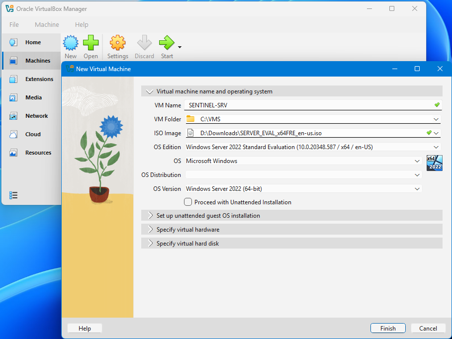
The server’s name matters later, because the HTTPS certificate in Part 5 is issued for it. If you used Unattended Installation, the Host Name you typed in the Set up unattended guest OS installation section of the New Virtual Machine dialog becomes the Windows computer name.
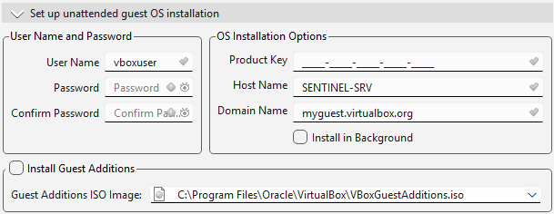
If you left Unattended Installation unticked, as we suggest, Windows gives the machine a generated name instead. We set the name properly once Windows is installed, in Name the server below.
Open Specify virtual hardware. We used 4096 MB of memory and 4 CPUs, which was plenty. Leave Use EFI unticked.
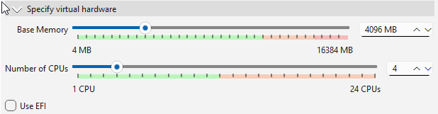
Open Specify virtual hard disk and make a new disk of 40 GB. The default VDI format is fine, and there is no need to pre-allocate the full size. Press Finish. VirtualBox creates the machine and Windows installation begins from the disc image, so carry straight on to Install Windows below. The network is the one setting we leave until Windows is installed, because it can only be changed while the machine is shut down.
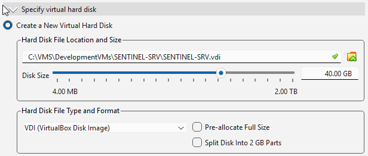
The machine starts from the disc image and Windows Setup begins. (If it has not started, select it in the VirtualBox Manager and press Start.) When Setup asks which operating system to install, choose Windows Server 2022 Standard Evaluation (Desktop Experience).
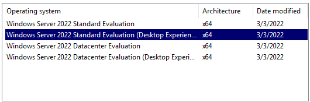
Follow the rest of Setup and set a password for the Administrator account. When the machine reaches the desktop, sign in.
This may happen if you ticked Proceed with Unattended Installation when creating the machine. Setup stops with this message:
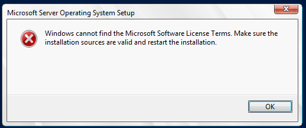
It may be particular to our setup, but if you see it the fix is quick:
Unattended-. VirtualBox attached it to carry the unattended answers. Select it and remove it with the Remove Attachment button at the bottom of the list.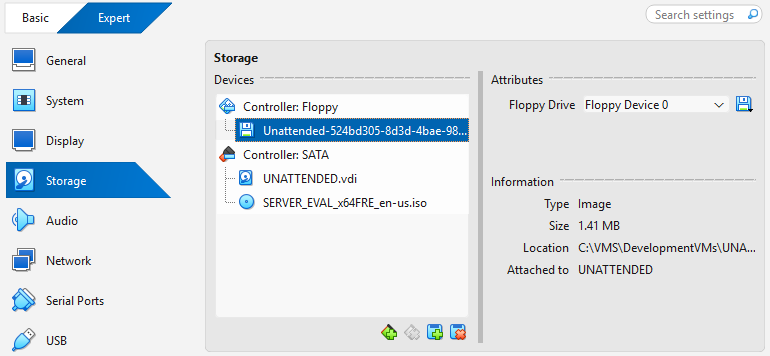
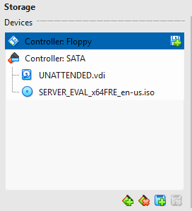
Start the machine again. Windows Setup should now run normally, so carry on from the edition list above. Because the unattended answers have gone, you choose the edition and set the Administrator password yourself, as if you had left the option unticked.
WIN-L1T4EPVEVA5. Later steps use the computer’s name: the HTTPS certificate in Part 5 is issued for it, and clients browse to it. Changing it afterwards means making a new certificate and checking the scheduled task from Part 4.See what the machine is called now. In PowerShell, run:
hostname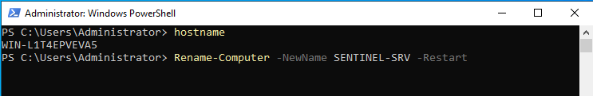
If it is already a name you are happy with, there is nothing to do. Otherwise, run this in an elevated PowerShell (right-click PowerShell and choose Run as administrator). It renames the computer and restarts it straight away, so save anything first:
Rename-Computer -NewName SENTINEL-SRV -RestartWindows computer names can be up to 15 characters, using letters, digits and hyphens. After the restart, run hostname again to confirm it shows the new name.
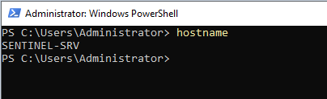
Guest Additions is VirtualBox’s helper software for the virtual machine. It gives a better display and lets you share a folder with your PC, which is handy for passing the SentinelSCADA installer across. From the virtual machine’s Devices menu choose Insert Guest Additions CD image, open the disc in File Explorer, run VBoxWindowsAdditions.exe and restart when asked.
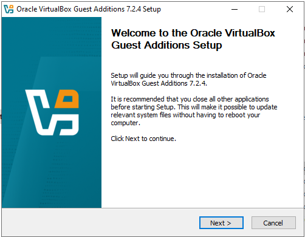
With Guest Additions installed, the same Devices menu lets you set up sharing between your PC and the virtual machine. Set these up to suit your own requirements:
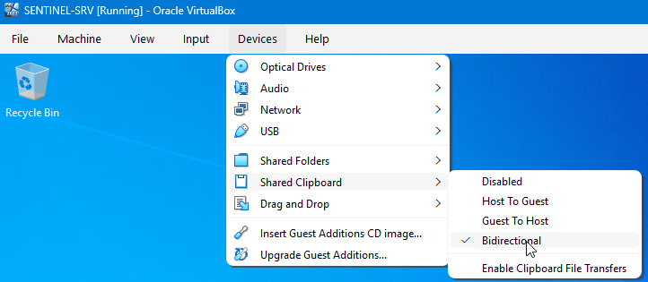
This is the part most worth getting right, and it is done last because it can only be changed while the machine is shut down. A new VirtualBox machine uses NAT on its first network adapter. NAT lets the server reach out to the Internet, which is all you need to download the runtimes in Part 2, but nothing on your own PC can reach in. For a SCADA server you want your browser, and other computers, to connect to it. So add a second adapter. First shut the virtual machine down from inside Windows (Start > Power > Shut down), and wait until it has stopped:
192.168.56.102, and your PC is 192.168.56.1. This is the connection your browser uses.With the machine stopped and selected, press Settings and open Network. On the Adapter 2 tab tick Enable Network Adapter and set Attached to to Host-only Adapter.
Start the machine again. If you want to check the connection, run ipconfig in PowerShell: the second adapter should show an address beginning 192.168.56. Once SentinelSCADA is running (Part 4), your own PC can reach it at that address.
A snapshot saves the machine’s exact state, so you can return to it at any time. From the virtual machine’s Machine menu choose Take Snapshot and call it Clean OS. Check that hostname shows the name you want first, so that every snapshot from here on carries it. It is worth taking another before any step that cannot be undone, such as the move to SQLite mode in Part 6. If something goes wrong, restore a snapshot and try again.